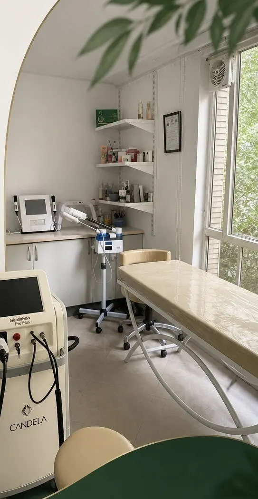
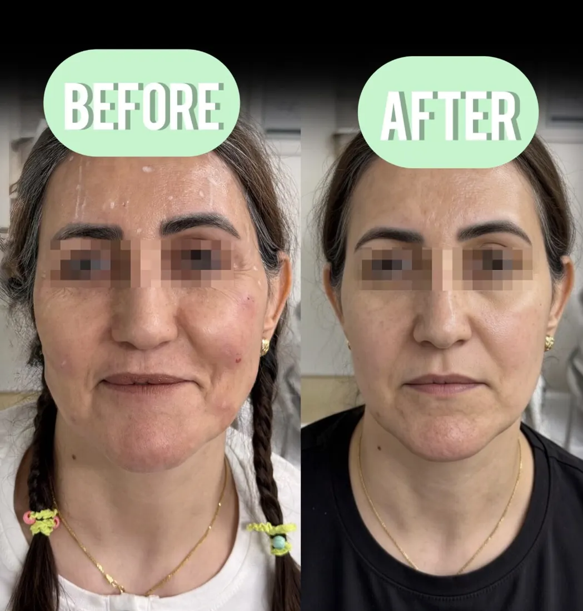
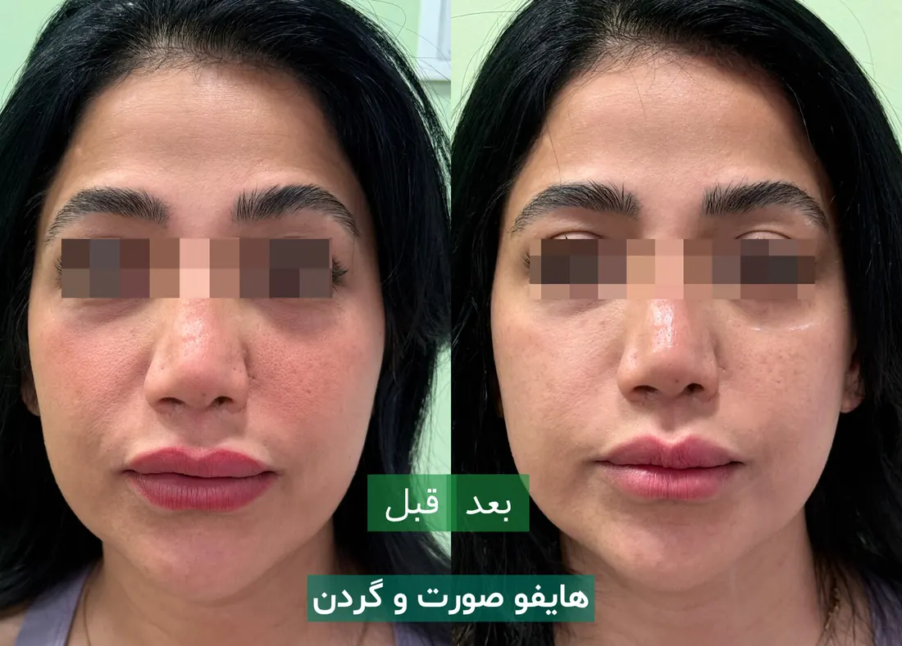
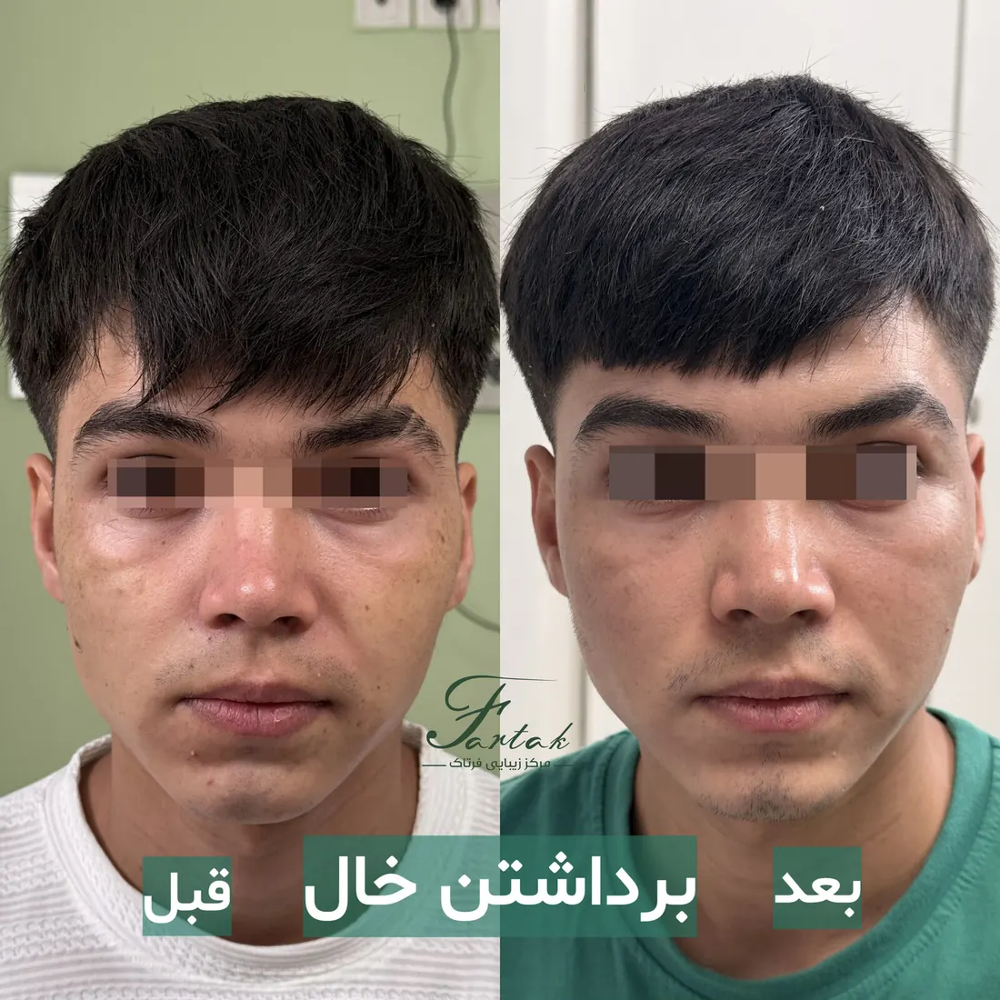

هر خدمت با مشاوره رایگان تخصصی آغاز میشود تا مسیر درمانی متناسب با پوست و نیاز شما طراحی شود.

حذف موهای زائد صورت و بدن با دستگاه آمریکایی کندلا، دارای دو طول موج الکساندریت (۷۵۵ نانومتر) برای پوستهای روشن و موهای نازک، و Nd:YAG (۱۰۶۴ نانومتر) مناسب انواع پوست از جمله پوستهای تیره. جلسات سریع، بدون وقفه طولانی و با کاهش دائمی و قابلتوجه موها.

هایفو هفتبعدی نسل جدید، نفوذ عمیقتر و دقت بالاتری نسبت به روشهای قبلی دارد و برای لیفت صورت، رفع افتادگی و تحریک کلاژنسازی مناسب است. نتایج طبیعی و ماندگار تا ۱۸ ماه، بدون دوران نقاهت.
رفع خطوط اخم، پیشانی و دور چشم و کنترل تعریق.
افزایش حجم و فرمدهی طبیعی با تکنیکهای تخصصی.
فرمدهی نواحی بدن با فیلرهای اورجینال اروپایی و کرهای.

برداشتن خال و لک صورت و بدن، همچنین لیزر خال و لک، در همان جلسه اول و بدون نیاز به مراجعات مکرر انجام میشود؛ با دقت بالا و کمترین اثر باقیمانده روی پوست.
پاکسازی عمیق، آبرسانی و افزایش شفافیت پوست متناسب با فصل.
تزریق سرمهای تخصصی برای آبرسانی عمیق و جوانسازی پوست.
تحریک کلاژنسازی طبیعی پوست برای بافتی یکدستتر و سالمتر.
بهبود بافت پوست و کاهش اثر آکنه و جای جوشهای قدیمی.
کاهش لکههای پوستی و یکنواختسازی رنگ پوست صورت.
نخ جوانساز برای طراحی خطوط صورت و افزایش قوام پوست بدون جراحی.
سادهترین راه، یک تماس تلفنی است — کارشناسان ما همین حالا پاسخگوی شما هستند.